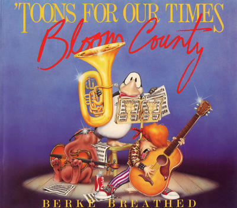
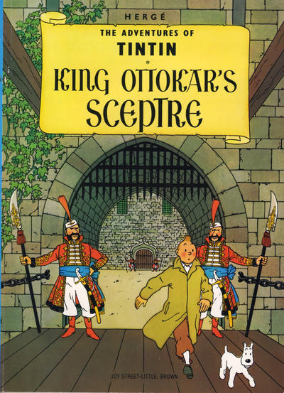
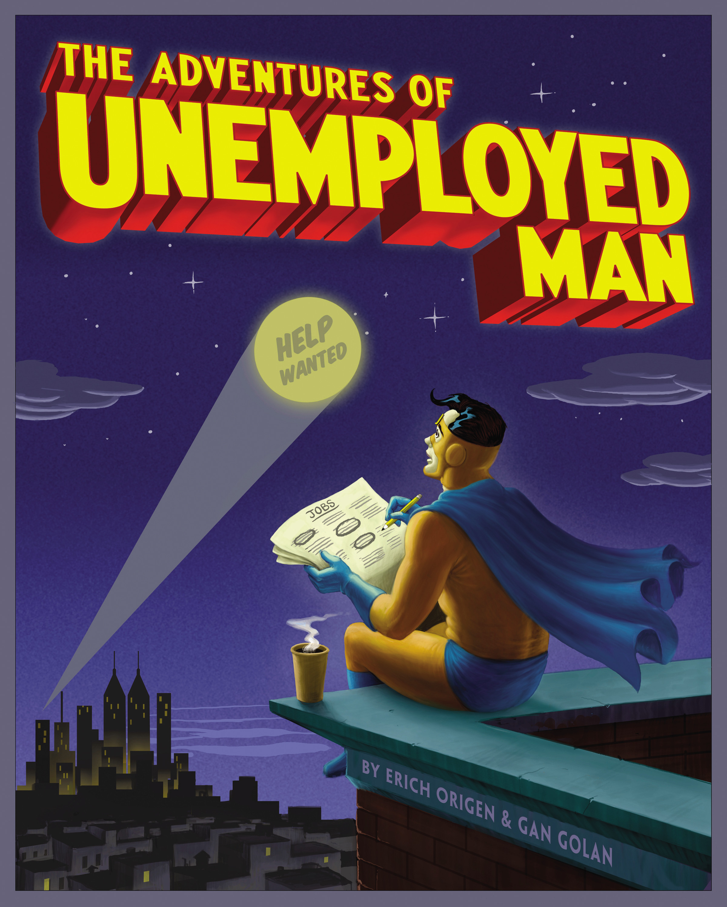
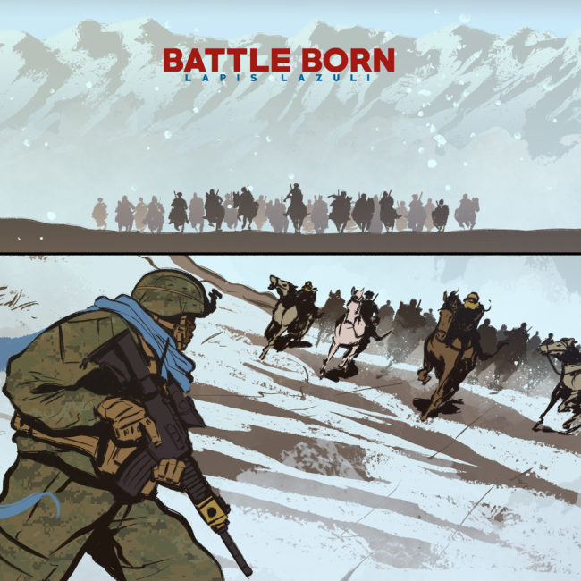
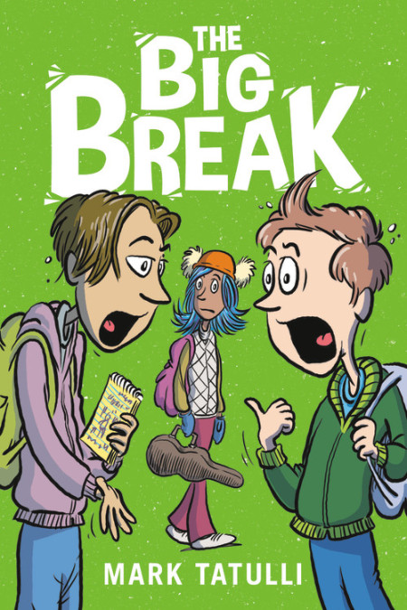
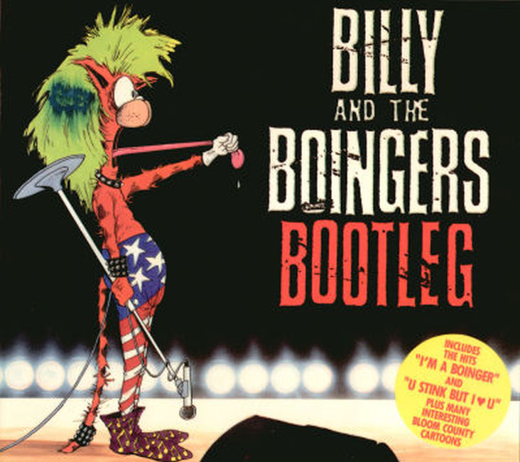
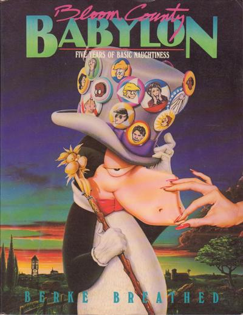
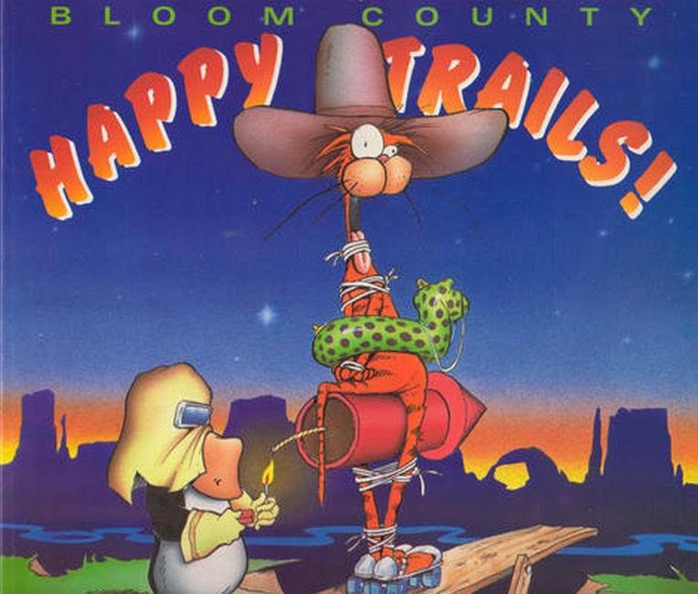
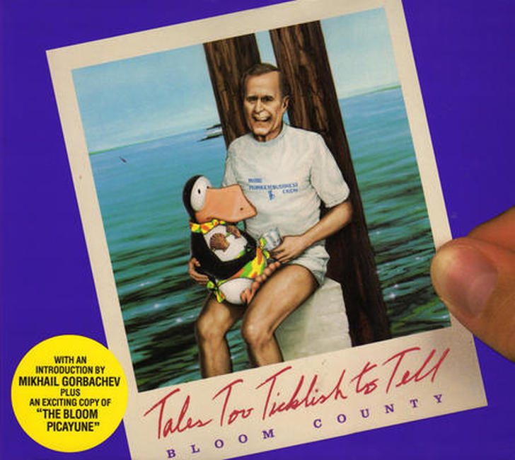

×








❮
❯
Web Site: littlebrown.com Little, Brown was an independent publisher until 1968. It was then owned by Time, Inc from 1968-1989, Time-Warner 1989- 2006, It was bought by Hachette Livre in 2006.
Titles
'Toons for Our Times 1984
Adventures of Tintin 1974
Adventures of Unemployed Man 2010
Battle Born: Lapis Lazuli 2020
Big Break 2020
Billy and the Boingers Bootleg 1987
Bloom County: Loose Tails 1983
Bloom County: Babylon 1986
Bloom County: Happy Trails 1990
Bloom County: Tales Too Ticklish to Tell 1988
Buzz Beamer's Radical Sports! 1990
CatStronauts 2017
Classics of Western Literature 1990
Comics: Anatomy of a Mass Medium 1972
Completely Mad: A History of the Comic Book and Magazine 1991
Daniel X: Alien Hunter 2008
DC Comics: Sixty Years of the World's Favorite Comic Book Heroes 1995
Deep & Dark Blue 2020
Encyclopedia of Early Earth 2013
Goldie Vance: The Hotel Whodunit 2020
Hangry 2019
In the Small 2008
Jacky Ha-Ha: A Graphic Novel 2020
Julius Knipl, Real Estate Photographer: Stories 1996
Lego Ninjago: Tournament of Elements 2015
Mad About the Fifties 1997
Max and Maurice, A Juvenile History in Seven Tricks 1899
Meg, Jo, Beth, and Amy: A Modern Retelling of Little Women 2019
Middle School Misadventures 2019
Middle School Misadventures: Operation: Hat Heist! 2020
Night of the Mary Kay Commandos 1989
One Last Little Peek, 1980-1995 1995
Opus: 25 Years of His Sunday Best 2004
Outland: His Kisses Are Dreamy... but Those Hairballs Down My Cleavage...! 1994
Penguin Dreams and Stranger Things 1985
Plain Janes 2020
Plish and Plum 1899
Politically, Fashionably, and Aerodynamically Incorrect 1992
R. Crumb Coffee Table Art Book 1997
Short & Skinny 2018
Terminal Lance Ultimate Omnibus 2018
Tin-Pot Foreign General and the Old Iron Woman 1985
Tintin and the Lake of Sharks 1989
Tintin Three-in-One 1993
WolfWalkers: The Graphic Novel 2020


{kind=link}
{kind=link}
{kind=link}
{kind=link}
{kind=link}
{kind=link}
{kind=link}
{kind=link}
{kind=link}